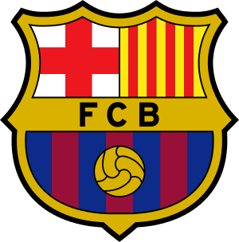
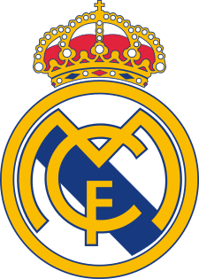
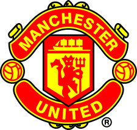

Joukkue-esittelyt

FC Barcelona: Historia, pelaajat ja valmentaja
FC Barcelona on yksi maailman menestyneimmistä jalkapallojoukkueista. Se tunnetaan erityisesti omasta pelityylistään ja huippupelaajistaan kuten Lionel Messi.
Lue lisää

Real Madrid: Mestarijoukkueen esittely
Real Madrid on voittanut enemmän Mestarien liigaa kuin mikään muu joukkue maailmassa. Se on tunnettu tähdistään ja historiallisista saavutuksistaan.
Lue lisää

Manchester United: Paluu huipulle?
Manchester United on yksi Englannin menestyneimmistä seuroista. Viime vuosina se on pyrkinyt palaamaan huipulle ja saavuttamaan uusia mestaruuksia.
Lue lisää